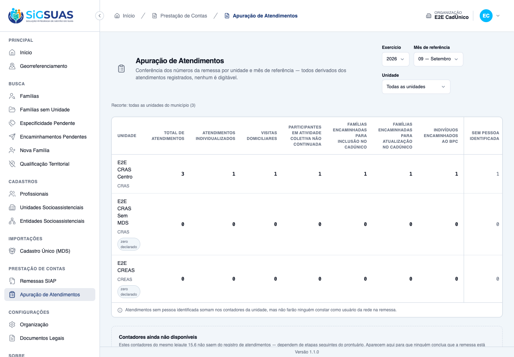
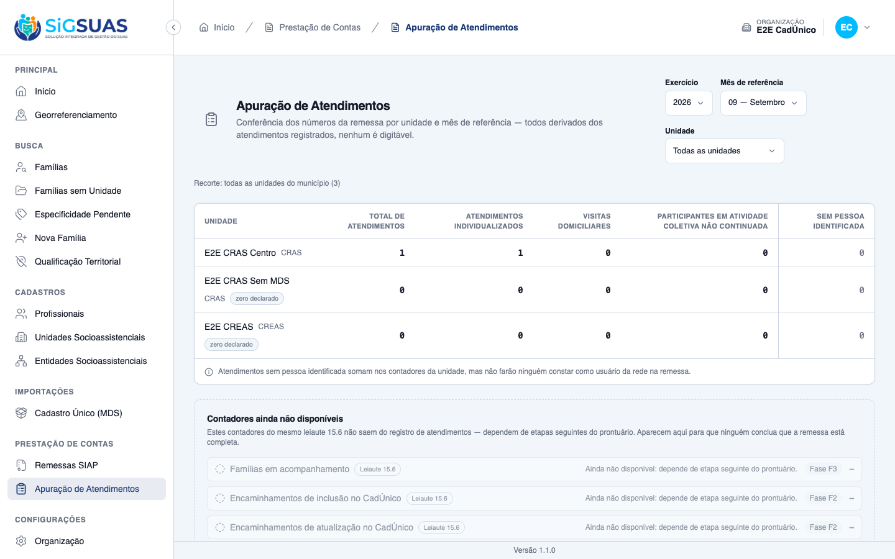
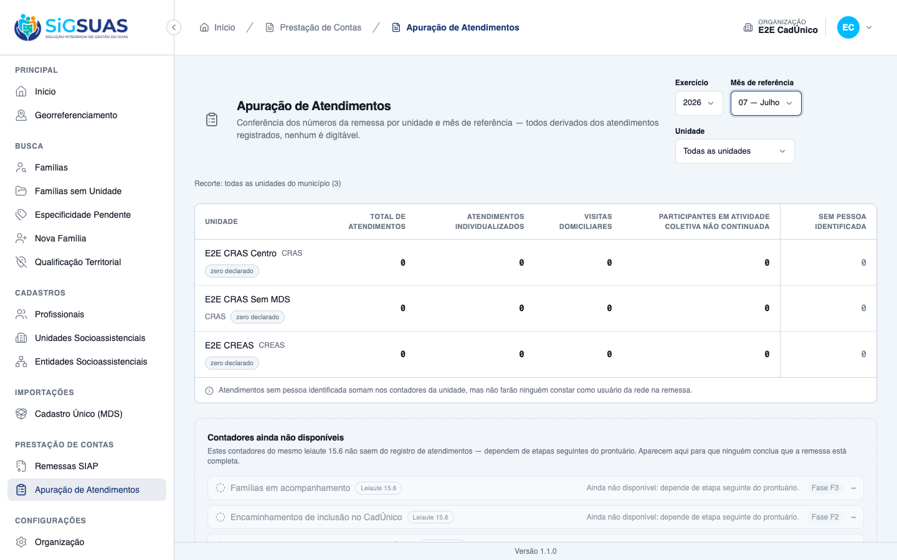

Critérios de Aceite — HU #10711
Resumo
12 critérios da HU mais 3 derivados. 8 evidenciados no navegador, 1 combinado e 6 pela suíte. Esta HU é a tela de conferência: ela NÃO altera os leiautes 15.6 e 15.8, que seguem HeaderOnly — a emissão é HU futura. Complemento de 04/09/2026: os dois contadores que na captura original apareciam zerados por ausência de massa — participantes em atividade coletiva não continuada (CA02) e sem pessoa identificada (CA07) — foram exercitados na tela com valor diferente de zero.
| CA | Critério | Status |
|---|---|---|
| CA01 | Apuração de uma unidade em um mês | ATENDIDO · navegador |
| CA02 | Participantes de atividade coletiva não continuada | ATENDIDO · navegador + automatizado |
| CA03 | Contadores que não vêm desta fase aparecem como indisponíveis | ATENDIDO · navegador |
| CA04 | Atendimento cancelado não conta | ATENDIDO · navegador |
| CA05 | Lançamento retroativo conta no mês do atendimento | ATENDIDO · navegador |
| CA06 | Correção reflete na consulta seguinte | ATENDIDO · automatizado |
| CA07 | Atendimentos sem pessoa identificada | ATENDIDO · navegador + automatizado |
| CA08 | Operacional vê apenas as suas unidades | ATENDIDO · automatizado |
| CA09 | Master vê todas as unidades | ATENDIDO · navegador |
| CA10 | Unidade sem atendimento no período | ATENDIDO · navegador |
| CA11 | Nenhum dado de cidadão na tela | ATENDIDO · navegador |
| CA12 | Isolamento entre municípios | ATENDIDO · automatizado |
| CA13 | Tipo inativado continua contando no passado | ATENDIDO · automatizado |
| CA14 | O total inclui tipos sem contador específico | ATENDIDO · automatizado |
| CA15 | Sem permissão, a tela não existe | ATENDIDO · navegador |
CA01 — Apuração de uma unidade em um mês ATENDIDO · navegador
Critério (Gherkin): Dado que a unidade teve atendimentos registrados no mês Quando eu consultar a apuração para o período Então vejo o total e os contadores por natureza E nenhum desses números é digitável
Como foi testado: Login como Master, menu Prestação de Contas → Apuração de Atendimentos, período 2026/Setembro.
- O CRAS Centro apresenta <code>1 · 1 · 0 · 0 · 0</code> — total, individualizados, visitas, coletiva não continuada e sem pessoa.
- Nenhum campo é editável: a tela só tem os seletores de período e unidade.
- Os números batem com o único atendimento registrado no mês pela própria tela da #10709.

CA02 — Participantes de atividade coletiva não continuada ATENDIDO · navegador + automatizado
Critério (Gherkin): Dado que foram registrados atendimentos do tipo "Participação em atividade coletiva de caráter não continuado" Quando eu consultar a apuração Então o contador de participantes apresenta a quantidade
Como foi testado: Complemento de 04/09/2026: registrado pela tela do prontuário um atendimento do tipo 3 — Participação em atividade coletiva de caráter não continuado, e consultada a apuração de 09/2026 como Master. Complementado pela suíte, que prova a derivação dos quatro contadores.
- A coluna <b>Participantes em atividade coletiva não continuada</b> passou de 0 para <b>1</b> assim que um atendimento desse tipo foi registrado — o contador reage ao tipo, não a um campo digitado.
- Na mesma linha, o total subiu para 3 e os demais contadores permaneceram coerentes: individualizados 1 e visitas domiciliares 1.
- A classificação vem de <code>attendance_types.remittance_counter</code>, não de <code>if</code> no código.
- É o único dos quatro contadores que compõe o leiaute 15.8; os outros três são do 15.6.

CA03 — Contadores que não vêm desta fase aparecem como indisponíveis ATENDIDO · navegador
Critério (Gherkin): Dado que estou consultando a apuração Quando eu olhar os contadores do leiaute 15.6 Então famílias em acompanhamento, encaminhamentos ao CadÚnico, ao BPC e benefícios eventuais aparecem identificados como ainda não disponíveis E a tela indica que dependem de etapas seguintes do prontuário
Como foi testado: Painel abaixo da tabela de contadores.
- Os <b>5 contadores</b> aparecem em estado apagado, com o motivo e a fase de origem (F2/F3/F5).
- O texto da tela explica a razão da regra: <i>“Aparecem aqui para que ninguém conclua que a remessa está completa.”</i>
- A distinção vem do dado (<code>available: false</code>), não de inferência do front.

CA04 — Atendimento cancelado não conta ATENDIDO · navegador
Critério (Gherkin): Dado que a apuração apresentava um total Quando um atendimento for cancelado E eu consultar a apuração novamente Então o total diminui E o atendimento cancelado continua visível no histórico da família
Como foi testado: O atendimento de 20/07/2026 foi cancelado pela tela da #10709; apuração consultada para 07/2026.
- Julho apresenta o CRAS Centro com <b>zero declarado</b> e todos os contadores em 0.
- O banco confirma: julho tem 1 atendimento, <b>0 válidos e 1 cancelado</b>.
- O cancelado continua no histórico da família — sai da apuração, não do prontuário.

CA05 — Lançamento retroativo conta no mês do atendimento ATENDIDO · navegador
Critério (Gherkin): Dado que foi lançado um atendimento ocorrido em mês anterior Quando eu consultar a apuração daquele mês Então esse atendimento está contado lá E não aparece na apuração do mês do lançamento
Como foi testado: Comparação entre as apurações de 07/2026 e 09/2026.
- O atendimento de <b>20/07</b>, lançado em <b>01/09</b>, é contabilizado em julho — não em setembro.
- Setembro apresenta apenas o atendimento de 01/09.
- A data que vale é a do <b>atendimento</b>, não a do lançamento.
CA06 — Correção reflete na consulta seguinte ATENDIDO · automatizado
Critério (Gherkin): Dado que corrigi o tipo de um atendimento Quando eu consultar a apuração do período novamente Então o contador correspondente mudou E o resultado anterior não ficou guardado em lugar nenhum
Como foi testado: Coberto pela suíte.
- Não existe tabela de apuração: o resultado é calculado a cada consulta.
- Materializar criaria um segundo estado a sincronizar em cada correção e cancelamento.
Evidência por cobertura automatizada — ver Anexo.
CA07 — Atendimentos sem pessoa identificada ATENDIDO · navegador + automatizado
Critério (Gherkin): Dado que parte dos atendimentos foi registrada sem identificar pessoa Quando eu consultar a apuração Então esse número é apresentado à parte E a tela informa que esses atendimentos não farão ninguém constar como usuário da rede na remessa
Como foi testado: Coluna própria na tabela, com nota explicativa. Complemento de 04/09/2026: registrado pela tela um atendimento sem nenhuma pessoa identificada e consultada a apuração de 09/2026.
- A coluna <b>Sem pessoa identificada</b> passou de 0 para <b>1</b> — o número é apresentado à parte, em coluna separada dos demais contadores, e não somado dentro deles.
- A tela declara a consequência logo abaixo da tabela: “Atendimentos sem pessoa identificada somam nos contadores da unidade, mas não farão ninguém constar como usuário da rede na remessa.”
- O atendimento sem pessoa continua somando no total da unidade (total 3), como a regra determina.
- O cálculo é <code>NOT EXISTS</code> na tabela de pessoas atendidas — não um contador desnormalizado.
CA08 — Operacional vê apenas as suas unidades ATENDIDO · automatizado
Critério (Gherkin): Dado que sou Operacional do Tenant lotado apenas em uma unidade Quando eu consultar a apuração Então vejo apenas essa unidade E as demais não são oferecidas
Como foi testado: Coberto pela suíte. Na massa deste dossiê o Operacional não recebeu a permissão, o que evidencia o CA15.
- O recorte usa a lotação vigente <b>hoje</b>: acesso é atributo do presente; a data governa a contagem, não a visibilidade.
- Unidade fora do recorte via query manual devolve <b>422 nomeado</b>, nunca tabela vazia silenciosa.
Evidência por cobertura automatizada — ver Anexo.
CA09 — Master vê todas as unidades ATENDIDO · navegador
Critério (Gherkin): Dado que sou Master do município Quando eu consultar a apuração Então vejo todas as unidades socioassistenciais do município, com seus números lado a lado
Como foi testado: Login como Master (CPF 529.982.247-25).
- As <b>três</b> unidades do município aparecem: CRAS Centro, CRAS Sem MDS e CREAS.
- O Master possui <code>attendance-reports.view</code> de verdade (via grant no papel), não por bypass de gate.
CA10 — Unidade sem atendimento no período ATENDIDO · navegador
Critério (Gherkin): Dado que uma unidade não registrou nenhum atendimento no período Quando eu consultar a apuração Então a unidade aparece com todos os contadores zerados E isso é apresentado como zero declarado, não como ausência de informação
Como foi testado: Observação das unidades sem movimento na mesma tela.
- CRAS Sem MDS e CREAS aparecem com selo <b>“zero declarado”</b> e quatro zeros — <b>não somem</b> da tabela.
- É visualmente distinto do painel de indisponíveis, que mostra “—” apagado.
- Zero afirmado e “não sabido” são coisas diferentes, e a tela mostra as duas ao mesmo tempo.
CA11 — Nenhum dado de cidadão na tela ATENDIDO · navegador
Critério (Gherkin): Dado que estou consultando a apuração Quando eu olhar os resultados Então vejo apenas quantidades por unidade E nenhum nome, CPF ou identificação de família
Como foi testado: Varredura do texto renderizado da página.
- Nenhum CPF (padrão <code>000.000.000-00</code>) e nenhum nome de família ou integrante.
- Só unidades e quantidades. Nem contagem de pessoas distintas, que permitiria inferência em unidade pequena.
CA12 — Isolamento entre municípios ATENDIDO · automatizado
Critério (Gherkin): Dado que sou usuário do município A Quando eu consultar a apuração Então vejo apenas unidades do município A
Como foi testado: Coberto por AttendanceReportIsolationTest.
- Unidade de outro tenant devolve o <b>mesmo 422</b> de unidade inexistente — sem oráculo de existência.
Evidência por cobertura automatizada — ver Anexo.
CA13 — Tipo inativado continua contando no passado ATENDIDO · automatizado
Critério (Gherkin): Dado que um tipo foi inativado no Painel Global Quando eu consultar a apuração de um mês anterior Então os atendimentos daquele tipo continuam contados
Como foi testado: Coberto pela suíte.
- A query <b>nunca</b> junta <code>attendance_types.is_active</code>.
- Inativar “Visita domiciliar” não pode apagar as visitas de meses já prestados.
Evidência por cobertura automatizada — ver Anexo.
CA14 — O total inclui tipos sem contador específico ATENDIDO · automatizado
Critério (Gherkin): Dado que houve atendimentos de tipo sem contador específico Quando eu consultar a apuração Então o total os inclui E eles não aparecem em nenhum contador específico
Como foi testado: Coberto pela suíte.
- O total é a soma de todas as linhas do agrupamento, <b>incluindo</b> as de contador nulo.
Evidência por cobertura automatizada — ver Anexo.
CA15 — Sem permissão, a tela não existe ATENDIDO · navegador
Critério (Gherkin): Dado que sou Operacional do Tenant sem a atribuição de apuração Quando eu procurar a apuração no menu Então a ação não existe para mim E o acesso direto pela URL é recusado
Como foi testado: Contraste entre as duas sessões: Operacional e Master.
- Para o Operacional, o item <b>não existe no menu</b> e a URL direta cai em <b>/403</b>.
- Para o Master, o item aparece e a tela abre normalmente.
- No banco: a permissão tem 2 registros (par de guards), o papel <code>master</code> a possui e o <code>operador</code> não — a <code>RESTRICTED_PERMISSIONS</code> impediu a concessão automática.
Observações e ressalvas
Esta HU é a tela de conferência, não a emissão
Os leiautes 15.6 e 15.8 continuam saindo da remessa apenas com cabeçalho. Passar a declarar números ao Tribunal com o leiaute ainda incompleto — sem os contadores das fases F2/F3/F5, que a própria tela mostra como indisponíveis — é decisão de PO, registrada como HU futura. O contrato está desenhado: quando a emissão vier, deve consumir o mesmo serviço desta tela, nunca reimplementar a contagem.
Débito com dono, para a HU de emissão
Unidade soft-deletada some da apuração levando junto os atendimentos dela. Está conforme a spec, mas na emissão faria o 15.6 declarar ao TCE-AL menos atendimentos do que o município realizou. Precisa de decisão explícita antes de o leiaute ser emitido.
E o risco de dupla contagem: os tipos 4 (cadastramento CadÚnico) e 6 (benefício eventual) têm campo próprio no 15.6, cuja fonte canônica é outro módulo. Hoje somam só no total; derivá-los por tipo na F2 faria o mesmo fato entrar duas vezes.
Sobre a massa deste dossiê
Os números são pequenos de propósito — dois atendimentos, um deles cancelado. O que se evidencia não é volume, e sim comportamento: que o cancelado sai, que o retroativo cai no mês certo, que a unidade sem movimento aparece com zero declarado, e que quem não tem a permissão não chega à tela.
Complemento de 04/09/2026 — os quatro contadores exercitados com valor
Na geração original, a massa do ambiente não continha atendimento de participação em atividade coletiva não continuada nem atendimento sem pessoa identificada, de modo que essas duas colunas apareciam zeradas nas capturas — justamente duas das quatro que alimentam os leiautes 15.6 e 15.8. A derivação já estava provada na suíte, mas o leitor via uma tabela onde elas nunca reagiam.Foram então registrados, pela própria tela do prontuário, um atendimento do tipo 3 e um atendimento sem pessoa identificada. A apuração de 09/2026 passou a apresentar, na linha do E2E CRAS Centro, total 3 com individualizados 1, visitas domiciliares 1, participantes em atividade coletiva não continuada 1 e sem pessoa identificada 1 — os quatro contadores desta fase reagindo ao mesmo tempo. Ao final, os dois atendimentos criados para a evidência foram removidos e a massa voltou aos 2 atendimentos originais, com os 8 tipos ativos.
Anexo — Cobertura automatizada (Pest — filtro Attendance: 139 testes; SyncPermissions: 14; todos verdes)
PASS Tests\Unit\Models\AttendancePersonTest ✓ it is tenant-scoped, soft-deletable, uuid-routed and audited 0.62s ✓ it audits ONLY ids — no name, no text (§6.2) 0.02s ✓ it keeps person_id coherent with the family member (P-A) and blocks… 0.23s PASS Tests\Unit\Models\AttendanceTest ✓ it is tenant-scoped, soft-deletable, uuid-routed and audited 0.03s ✓ it casts attended_on as date and status as the AttendanceStatus enu… 0.04s ✓ it configures the activity log with ONLY the structured fields — ne… 0.03s ✓ it reports isCancelled by STATUS, with deleted_at untouched (RN09) 0.04s PASS Tests\Unit\Models\AttendanceTypeTest ✓ it has correct fillable, casts and defaults 0.02s ✓ it uses soft deletes, HasUuid, LogsActivity and resolves by uuid 0.02s ✓ it is a GLOBAL lookup — never tenant-scoped (RN04/RN10) 0.03s ✓ it has no global scope of is_active — history and remittance never… 0.04s ✓ it keeps the remittance rule as data, cast to the enum (RN03/D03) 0.02s ✓ it accepts NULL as a legitimate remittance counter value (CA03) 0.02s ✓ it enforces unique code — even against soft-deleted rows (RN02) 0.02s ✓ it configures the activity log with the audited fields (RN07/§14) 0.02s PASS Tests\Feature\Api\AttendanceTypeControllerTest ✓ it lists attendance types exposing uuid and the remittance rule — n… 0.09s ✓ it shows the remittance counter with its label (CA02) 0.03s ✓ it shows NULL counter as an explicit "no specific counter" label (C… 0.03s ✓ it creates an attendance type with the code informed by the admin (… 0.05s ✓ it rejects a duplicate code (CA04) 0.04s ✓ it requires code and name — the code is never generated (CA04) 0.03s ✓ it rejects a remittance counter outside the enum 0.03s ✓ it audits the change of the remittance rule with old and new values… 0.04s ✓ it exposes the audit trail with causer and pagination (CA09) 0.04s ✓ it soft deletes an attendance type 0.05s ✓ it bulk deactivates and bulk activates attendance types, logging th… 0.03s ✓ it filters actives for the new-entry select, and returns inactives… 0.03s ✓ it filters by remittance_counter 0.02s ✓ it blocks write without permission 0.03s ✓ it refuses to delete a type in use with 422, guiding deactivation (… 0.03s ✓ it still soft deletes a type NOT referenced by any consumer (CA05) 0.03s ✓ it refuses to delete a type referenced by a REAL attendance — the p… 0.04s ✓ it blocks the bulk destroy through the REAL production consumer too… 0.04s ✓ it ignores a registered consumer whose table does not exist yet (D0… 0.03s ✓ it bulk destroy is ATOMIC: one item in use blocks all and is identi… 0.03s ✓ it rejects soft-deleted uuids in every bulk action at validation ti… 0.04s ✓ it bulk destroys unused types, logging the bulk event with author (… 0.04s ✓ it gives the admin_operador read-only access — every write is 403 (… 1.54s ✓ it lets the ADMIN role exercise all eight abilities end to end 1.42s ✓ it rejects client-guard tokens on every write route with 401, creat… 0.04s ✓ it keeps the shared read alive for the client guard — the tenant se… 0.03s PASS Tests\Feature\Api\Client\AttendanceControllerTest ✓ it registers an individual attendance with person, responsible and… 0.14s ✓ it registers a family-level attendance with NO person — zero pivot… 0.08s ✓ it refuses a future date (CA03/RN04) 0.08s ✓ it accepts TODAY at 23h in the app timezone — the boundary never re… 0.09s ✓ it saves a retroactive attendance in a remitted month AND returns t… 0.09s ✓ it does NOT warn when the month remittance is pending or failed (CA… 0.08s ✓ it refuses a person from ANOTHER family and an UNLINKED member (CA0… 0.10s ✓ it refuses the SAME person twice in one attendance (§6.2) 0.08s ✓ it derives person_id from the family member and never accepts it fr… 0.08s ✓ it records the responsible professional apart from the author, and… 0.09s ✓ it refuses a responsible whose assignment only started AFTER the at… 0.09s ✓ it refuses a unit where the operational user has NO assignment on t… 0.08s ✓ it lets the MASTER register in any unit of the tenant, without assi… 0.08s ✓ it corrects the attendance type in place (CA09/RN08) 0.09s ✓ it revalidates the WHOLE trio on edit: changing only the date inval… 0.09s ✓ it syncs people on edit per model: adds and removes without sync()… 0.12s ✓ it warns for BOTH the old and the new month when a remitted attenda… 0.11s ✓ it cancels with reason, preserving the row and leaving the counters… 0.11s ✓ it refuses to EDIT a cancelled attendance — cancelled is terminal (… 0.10s ✓ it requires the cancel reason (CA11/RN09) 0.08s ✓ it warns about the generated remittance ALSO on cancellation (CA11b… 0.08s ✓ it refuses to register for a family WITHOUT a reference unit — 422… 0.08s ✓ it keeps social_unit_id as a SNAPSHOT: transferring the family does… 0.08s ✓ it registers ONE independent attendance per family in the batch (CA… 0.10s ✓ it writes NOTHING when ONE family of the batch is invalid — and ide… 0.08s ✓ it treats a family of ANOTHER tenant in the batch as not found — wi… 0.09s ✓ it rejects people in the batch — collective activity does not ident… 0.07s ✓ it serves units, responsibles, ACTIVE types and the month warning t… 0.09s PASS Tests\Feature\Api\Client\AttendanceIndexTest ✓ it lists attendances chronologically by attended_on, newest first,… 0.09s ✓ it breaks same-day ties by created_at DESC then id DESC — the order… 0.08s ✓ it paginates stably when a batch put five attendances on the same d… 0.09s ✓ it places a retroactive entry in its chronological position, not at… 0.07s ✓ it keeps the cancelled attendance visible, marked, with reason and… 0.08s ✓ it filters by period on the attendance date (CA05/RN04) 0.08s ✓ it rejects an inverted period (to before from) 0.07s ✓ it filters by attendance type (CA06) 0.07s ✓ it keeps attendances of a deactivated type visible AND filterable (… 0.08s ✓ it filters by responsible professional (RN04) 0.07s ✓ it filters by status when the user asks — never by default (RN03) 0.08s ✓ it shows attendances from EVERY unit, identified per line, even whe… 0.08s ✓ it refuses a sort parameter — chronological order is the instrument… 0.08s ✓ it denies the history with the same record cut, naming the reason b… 0.10s ✓ it treats a family from another tenant as nonexistent (CA10/RN09) 0.08s ✓ it writes ZERO activity_log rows for listing, filtering and paginat… 0.09s ✓ it runs a constant number of queries regardless of how many attenda… 0.11s ✓ it keeps the attended person on the line after the family member li… 0.08s PASS Tests\Feature\Api\Client\AttendanceReportTest ✓ it derives the four counters per unit and the total includes types… 0.09s ✓ it declares the unavailable counters in the payload — value null, a… 0.08s ✓ it excludes cancelled attendances from the report while they remain… 0.09s ✓ it counts a retroactive attendance in the month it happened, not th… 0.09s ✓ it reflects a type correction on the next query and stores nothing… 0.10s ✓ it reports attendances without an identified person separately, via… 0.08s ✓ it scopes the Operacional to units with an assignment in force TODA… 0.09s ✓ it shows the master every unit of the tenant, and a unit without mo… 0.07s ✓ it never leaks citizen data in the serialized payload — no name, no… 0.08s ✓ it keeps counting past attendances of a type inactivated in the Glo… 0.07s ✓ it narrows the report to a single unit when social_unit_uuid is giv… 0.07s ✓ it keeps unit_count at the Operacional full scope when filtering on… 0.09s ✓ it rejects with a named 422 a unit outside the user scope — never a… 0.08s ✓ it rejects an out-of-range reference month with the SIAP named mess… 0.09s ✓ it denies the Operacional without the manual grant — the restricted… 0.10s ✓ it denies a granted user without an ACTIVE professional bond in the… 0.10s PASS Tests\Feature\Console\SyncPermissionsTest ✓ it keeps attendance-types write abilities out of the client guard r… 1.47s ✓ it grants the Operacional Global read-only access to attendance typ… 1.47s ✓ it keeps attendance-reports.view out of the default CLIENT_OPERADOR… 1.47s PASS Tests\Feature\Dashboard\AttendanceTest ✓ it returns two contiguous 12-point series from source_registered_at… 0.12s ✓ it counts a family in different months across the two independent s… 0.06s ✓ it excludes families with a null date from the respective series (C… 0.06s ✓ it matches the Painel 2 monthly evolution point by point (RN07) 0.08s ✓ it recalculates for a neighborhood, covering only geocoded families… 0.07s ✓ it returns two 12-point zero series when the scope has no families… 0.05s ✓ it returns 422 for a neighborhood_uuid outside the tenant municipal… 0.05s ✓ it denies the panel to the base operator without the dedicated role 0.05s ✓ it grants the panel to the Master without any add-on role 0.05s PASS Tests\Feature\Family\AttendanceAuditTest ✓ it NEVER leaks the description nor the cancel reason into the activ… 0.09s ✓ it never echoes the description in validation messages nor in denia… 0.11s ✓ it audits people changes per model — created and deleted events wit… 0.10s PASS Tests\Feature\Seeders\AttendanceTypeSeederTest ✓ it seeds the eight attendance types of the instrument — codes 1..7… 0.03s ✓ it carries the remittance rule of RN03 as data — three counters, fi… 0.03s ✓ it is idempotent — running the seeder twice does not duplicate nor… 0.03s PASS Tests\Feature\Services\AttendanceEligibilityServiceTest ✓ it lists for the operational user only the units with an assignment… 0.06s ✓ it includes the unit whose assignment STARTS exactly on the date an… 0.05s ✓ it returns no unit for an operational user whose professional link… 0.04s ✓ it lets the Master select ALL non-deleted units of the tenant, with… 0.05s ✓ it answers canRegisterInUnit per unit and date for the operational… 0.05s ✓ it lists as selectable responsibles only professionals assigned to… 0.06s ✓ it orders selectable responsibles deterministically by the user nam… 0.05s ✓ it keeps an INACTIVE professional eligible as responsible for a ret… 0.04s ✓ it answers isResponsibleEligible on the [start, end) boundaries and… 0.05s PASS Tests\Feature\TenantIsolation\AttendanceIsolationTest ✓ it answers 404 for a family of ANOTHER tenant with the SAME body as… 0.09s ✓ it answers 404 when the attendance belongs to ANOTHER family — scop… 0.09s ✓ it answers 403 unit_not_assigned for a family of another unit — WIT… 0.09s ✓ it answers 403 no_active_assignment when the professional has no as… 0.08s ✓ it answers 403 for the operator WITHOUT the LGPD add-on — the class… 0.09s ✓ it scopes attendances by tenant through the BelongsToTenant global… 0.08s PASS Tests\Feature\TenantIsolation\AttendanceReportIsolationTest ✓ it shows the tenant A master only tenant A units and numbers (CA12/… 0.07s ✓ it rejects a tenant B unit used as filter with the same named 422 —… 0.07s PASS Tests\Feature\TenantIsolation\DashboardAttendanceIsolationTest ✓ it never counts families from another tenant in the attendance pane… 0.06s Tests: 139 passed (700 assertions) Duration: 18.03s ===== SyncPermissionsTest (CA15 — contrato da permissão) ===== PASS Tests\Feature\Console\SyncPermissionsTest ✓ it extracts the can: abilities declared by controllers from the rou… 0.63s ✓ it keeps full parity with the previous hardcoded permission set (no… 0.03s ✓ it seeds permissions for both guards and assigns them to roles 1.42s ✓ it runs permissions:sync idempotently without duplicating permissio… 2.45s ✓ it prunes orphan permissions not present in the registry 2.62s ✓ it does not write anything on --dry-run 0.10s ✓ it does not assign RESTRICTED_PERMISSIONS to any role 1.34s ✓ it permissions:sync --coverage fails when an authenticated route ha… 1.36s ✓ it never mirrors any platform-versions ability into the client guar… 1.36s ✓ it never mirrors any cbo-access-profiles ability into the client gu… 1.34s ✓ it grants the Operacional Global read-only access to the CBO map (H… 1.40s ✓ it keeps attendance-types write abilities out of the client guard r… 1.48s ✓ it grants the Operacional Global read-only access to attendance typ… 1.31s ✓ it keeps attendance-reports.view out of the default CLIENT_OPERADOR… 1.37s Tests: 14 passed (119 assertions) Duration: 18.83s